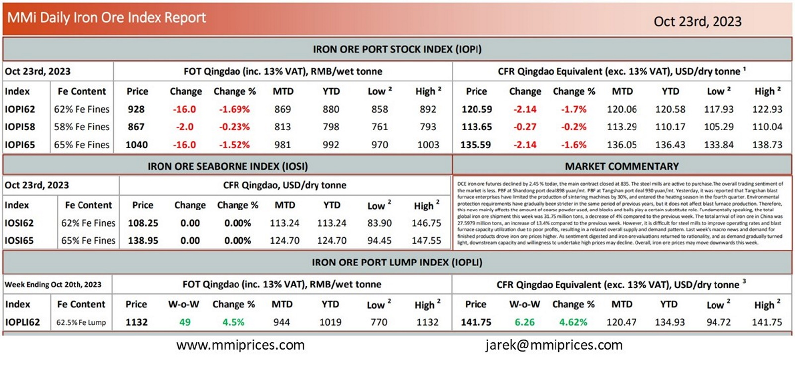

DCE iron ore futures declined by 2.45 % today, the main contract closed at 835. The steel mills are active to purchase.The overall trading sentiment of the market is less. PBF at Shandong port deal 898 yuan/mt. PBF at Tangshan port deal 930 yuan/mt. Yesterday, it was reported that Tangshan blast furnace enterprises have limited the production of sintering machines by 30%, and entered the heating season in the fourth quarter. Environmental protection requirements have gradually been stricter in the same period of previous years, but it does not affect blast furnace production. Therefore, this news mainly affects the amount of coarse powder used, and blocks and balls play a certain substitute role. Fundamentally speaking, the total global iron ore shipment this week was 31.75 million tons, a decrease of 4% compared to the previous week. The total arrival of iron ore in China was 27.5979 million tons, an increase of 13.4% compared to the previous week. However, it is difficult for steel mills to improve operating rates and blast furnace capacity utilization due to poor profits, resulting in a relaxed overall supply and demand pattern. Last week’s macro news and demand for finished products drove iron ore prices higher. As sentiment digested and iron ore valuations returned to rationality, and as demand gradually turned light, downstream capacity and willingness to undertake high prices may decline. Overall, iron ore prices may move downwards this week.

Download PDFSource: Metals Market Index (MMi)